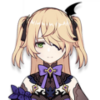
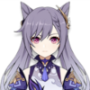
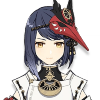
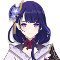
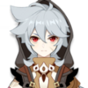
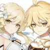

Electro
.png)
Beidou
She is the captain of The Crux, a renowned crew in Liyue. Besides her capabilities as a fleet captain and her immense strength, many in Liyue know her for her lack of fear towards the Tianquan of the Liyue Qixing, Ningguang — a trait that the other woman appreciates, yet grows irritated by.


Fischl
Fischl is an investigator for Mondstadt's Adventurers' Guild, accompanied by the night raven Oz. Fischl claims to hail from a world beyond Teyvat. She is a daring adventurer with seemly outlandish theories that happen to turn out to be true.

Keqing
As the Yuheng of the Liyue Qixing, she is someone who seeks her own answers instead of idly letting chaos run amok in Liyue. She chooses her own path with her own power and ability, instead of letting the gods determine her fate.


Kujou Sara
A tengu, Sara is the adopted daughter of the Kujou Clan of the Tenryou Commission. Loyal to both her clan and the Shogun, Kujou Sara carries out her orders to the Shogun's will.
Lisa
A powerful mage recognized as Sumeru Academia's most distinguished graduate in 200 years, Lisa has since returned to Mondstadt to become the humble Librarian of the Knights of Favonius.

Raiden Shogun
She controls a puppet while meditating inside the Plane of Euthymia. Her current form is the vessel of Raiden Ei, the current Electro Archon of Inazuma.

Razor
Abandoned as an infant, Razor was taken in by the Wolf of the North, Andrius, and raised by his wolf pack in Wolvendom. After a chance encounter with Varka, the current Grand Master of the Knights of Favonius and the Knight of Boreas, he has slowly started integrating with humans again.

Traveler
At the beginning of the game, both genders are twin siblings from another world, traveling throughout the universe, until an unknown god blocked and captured one of them, and sealed their power to travel, leaving them stranded on Teyvat. They are accompanied by a travel companion named Paimon throughout their journey.